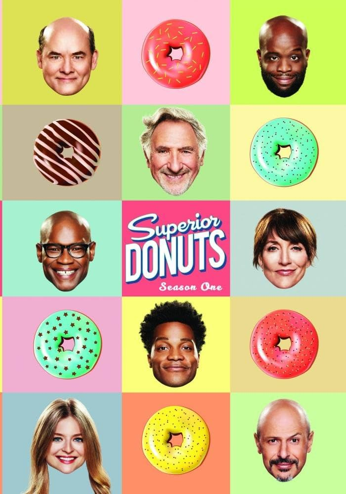

CBS
SUPERIOR
DONUTS
The Work
Writing network
comedy.

Wrote two produced episodes of the CBS series, working within an established ensemble, tone and production rhythm.
Wage Against the Machine
Franco takes a second job as Fawz's assistant to make extra money. Also, Randy and James compete against each other to see who can win a coveted cash prize at work.
Watch on Paramount+ ↗High Class Problems
After Franco finds out that his new girlfriend, Tavi, is rich, he begins to wonder if she is only dating him to make herself look more progressive.
Watch on Paramount+ ↗